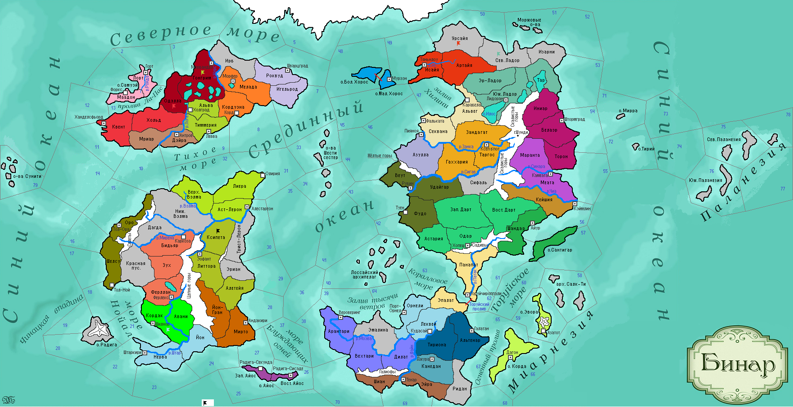

<==
| 1 |
| 2 |
| 3 |
| 4 |
| 5 |
| 6 |
| 7 |
| 8 |
| 9 |
==>

9-й ход истории мира Бинар (1140 г.)
· Алисия Мирадосская стала правительницей Мирадоса. Её сестра Анжелика, не выдержав поражения в борьбе за трон, выпила яда и скончалась.
· Войска Штартизи уничтожают войска Кордавы в провинции Йон и вновь захватывают Кордак.
· Умирает князь Кордавы Инганиус I Дуроной глаз… Его меняет сын Эгрик.
· Бьянфанг принимает культ Мортис.
· Карас I – новый правитель Вестервальда. В битве на Мховом Поле войска Вестервальда, ведомые наёмным полководцем из Ладориана Кормаком Кровавой Луной наносят сокрушительное поражение армии Одегона и захватывают провинцию Одэлла.
· Забиру принимает власть в Темпесте. Прозванный «Любвеобильным», он заключает в первый год своего правления четыре (!) династических брака.
· Послы в Моэдасе отмечали в своих отчётах о присущей атаркам добродетели гостеприимства.
· Религиозные агитаторы из Дюрандаля склонили часть населения провинции Роквуд к почитанию культа Мортис. Другая часть населения воспротивилась этому и подняла бунт.
· Княжество Эомер присоединяет земли Ксипеты. Однако соседние варварские племена воспринимают этот шаг, как нарушение ранее достигнутых договорённостей с князем Фаэнтом I, атакуют нидонскую армию и одерживают верх.
· Мастера Фриулеса первыми в мире начали изготавливать доспехи.
· Знать Одегона свергает князя Хассе II. На трон всходит Хальдруп II Мохноногий из рода Стуэ.
· Ботоллио Красивая в возрасте 5 лет взошла на трон Феллерда. Войска Феллерда вновь вторгаются в Гонгрим и вынуждают остатки сил Одегона отступить в столицу.
· Основаны новые города: Кудасай (Орнели), Азатот (Коринтар)